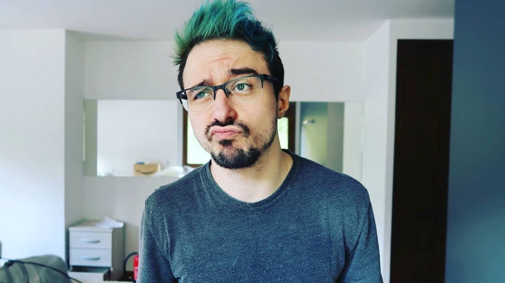

Tri-Line

15-09-2023. Actualmente con 6.77 Millones de subscriptores,
Tri-Line
es un Youtuber español cuyo contenido principal es sobre curiosidades, debes en cuando sube videos sobre temas serios como
"Depresión",
"La maldición de la inteligencia",
"Todo el mundo miente" y
"La oscuridad oculta del dinero"
son algunos de sus videos más interesantes.
Datos de Tri-Line
- Carlos García Sánchez es el nombre real de este Youtuber.
- Nacío el 19 Agosto de 1987 en Barcelona, España. Actualmente tiene 36 años.
- Creo su canal en youtube en 2012, aunque su primer video no fue publicado hasta 2013 su contenido inicialmente era sobre consejos para dibujar manga, luego empezo con los tops sobre hentai.
- Es hermano menor del también Youtuber
8cho.
- El "Tri" de su nombre como youtuber proviene de su anime favorito 'Trigun' y "Line" viene de la palabra linea en ingles.
- Gracias a 8cho se sabe que ambos vivían en un ambiente familiar muy malo. Por esta razón es que en cuanto pudieron, ambos se fueron de casa y se valieron por sí mismos.
- Antes de dedicarse a Youtube, se ganaba la vida dibujando manga.